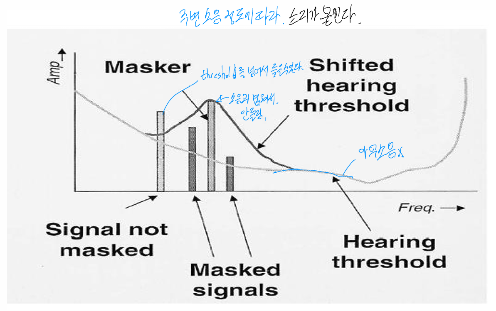
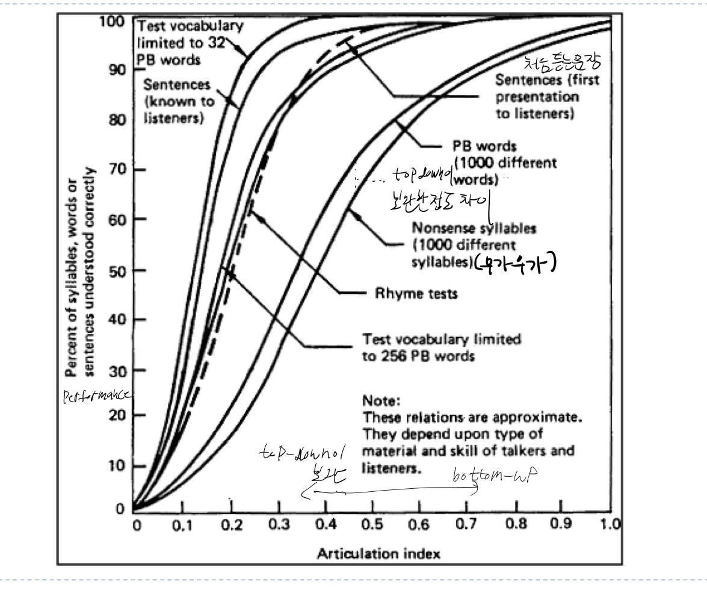

Auditory Haptic

귀의 구조

Sound Waves
- 소리는 압력이 변하는 것
- 소리는
vibrating object에 의해 발생한다
연못에 돌을 던지면 생기는 wave와 비슷함 - 어떤 분자든 움직이고 압력을 만들 수 있는건 전달 가능함
물속에서도 소리가 전달됨. (밀도가 높아서 더 빨리 전달됨)
고체(층간소음, 철로), gas
진공에서는 매질이 없어서 소리가 안들림(우주 공간) <->빛은 매질이 없어도 이동됨 - 파동이 전기신호로 바뀌어서 들림
물리적 특성

amplitude: 진폭의 크기 -> volumewavelength: 진폭의 넓이 -> pitch, 1초 안에 몇 번 진동하는지(주파수 10Hz = 10번 진동)
사람이 느끼는 perception
Pitch(소리의 높낮이)
사람이 들을 수 있는 주파수는 20Hz ~ 15kHz
어릴 때는 고주파를 잘 들음 (고주파에 고막이 반응을 못해서)
사람은 고주파에 반응을 잘 못함
절대 음감이랑 관련Timbre(음색)
음악에서는 악기마다 다른 음색이 있음
음색은 여러 주파수의 하모니(complex set of resonance공명)로 결정됨Amplitude and loudness
소리의물리적 강도가 2배 증가할 때우리가 느끼는소리의 크기(loudness)가 배로 느껴짐(찾아보니까 2배는 아니긴 함) 160db까지 들을 수 있음 130db부터는 고통스러움Spatialisation
소리는 어느 방향에서 소리가 나도 들을 수 있음 (omnidirectional).
시각은 볼 수 있는 방향만 볼 수 있음
Sound intensity (dB)
- 데시벨(dB)은 기준점에서 로그 스케일만큼 증가. (선형적 x)
- threshold: 주변의 소음에 비해 소리가 들리는 정도. 주파수에 따라 다른 특성을 가짐.
85 dB에 장시간 노출되면 청력 손상
- 신경의 손상: 장시간 센 자극에 hair cell이 손상됨
- conduction damage: 소리의 세기가 너무 커서 고막이나 뼈에서 손상이 생김
Masking Effect

청각에서만 주로 나타남.
Equal Loudness Contour

곡선은 사람들이 소리가 같은 크기라고 느끼는 지점을 나타냄
인간 청력의 threshold가 주파수마다 다르다.
저주파수와 고주파수는 중간 주파수에 비해 같은 강도에서 상대적으로 작게 들립니다
Locating Sounds
왼쪽 귀와 오른쪽 귀에서 들리는 소리의 차이
difference in phase(위상): 소리의 파장이 오목한 phase, 볼록한 phase 차이difference in loudness: 가까운게 더 크게 들림difference in onset: 가까운게 더 빨리 도달함
여기까지가 소리의 mechanical한 특성이고, 이후는 이 소리를 인간이 어떻게 perception하는지에 관한 내용
Hearing Without Awareness
Cocktail Party Effect: 주변 소음에서도 특정 소리를 들을 수 있음
Ex) 친구 이름을 듣고 반응하는 것, 한국인들이 한국말을 잘 듣는것Dichotic Listening: 두 귀에 다른 소리를 들려주고 정보를 인식했는지 확인
ignored 귀에서 여전히 정보를 인식할 수 있다.
Alarms
Overview
omnidirectional한 특성때문에 visual alarm에 비해 자주 사용된다
Ex) 소방차 사이렌 소리
주변 소음에 비해 충분히 db이 커야함 주변 소음과의 차이가 15dB minimal, 30dB required
하지만 소리가 너무 크면 청각에 손상을 일으킬 수 있음안전상의 이유로 소리는 85 ~ 90dB 이하로 유지되어야 함
masking 위협때문에 여러 주파수를 혼합해서 냄다른 signal과 헷갈리지 않아야함
Ex) 병원의 환자실에 여러 장비가 있는데 장비마다 알람이 구분이 안되면 안됨.Informative and distinctive
각각의 physical dimension(pitch(4), duration(4), amplitude(4))은 4개를 넘게 쓰지 마라
Ex) 컴퓨터 메인보드, 장비 고장 시 비프음 기준이 있음
Ex) 자동차- stereotypic: 어디서 소리가 오는지
- pitch
- stereotypic: 어디서 소리가 오는지
Non-speech Alarm
language independent
글로벌하게 가고 싶다면NSA가 유용하다는 증거
클릭을할 때 딸깍 소리가 나면 실수가 덜 함
비디오 게이머들은 소리가 없으면 게임을 못함일시적이고 부수적인 상태 정보 전달에 효과적
예시) 게임에서:- HP가 부족할 때 주기적인 경고음
- 아이템 획득 시 짧은 효과음
- 배경에서 지속적으로 재생되는 상태 알림음
- HP가 부족할 때 주기적인 경고음
stereo sound로 방향을 알려줄 수 있음
비쥬얼로는 3d 표현하기 어려움
Voice Alarm
자연스러운 방법으로 기기와 통신할 수 있음
Symbolic alarm에 비해 더 많은 정보를 전달할 수 있음
Symbolic alarm은 학습을 해야한다는 단점이 있음Non-Speech에 비한 한계
- 소리가 섞이면 헷갈림
- more susceptible to frequency-specific masking
사람의 voice는 정해진 주파수가 있다.
그 주파수에 소리가 섞이면 소리를 못들을 수 있음 - 다국어 환경을 고려해야함
Sound Transmission Problem
말하고자 하는 바가 전달이 잘 안될 수 있음
Ex) 파일럿 안내. 라디오에서 사용할 수 있는 대역폭이 제한되있음
- 소리가 섞이면 헷갈림
Voice Recognition
Sound Transmission Problem을 해결하기 위해 사용됨
Articulation index: pure bottom-up(signal의 특성에 의존) approach
signal이 얼마나 명확하게 잘 들리는지 평가
1.0: 주변소음에 상관없이 잘 들리는 상태
0.0: 주변소음에 묻혀서 소리가 들리지 않는 상태Speech intelligibility measure
poor signal quality is compensated by top-down processing => 어떻게 top-down processing을 잘 할까?를 테스트 해 보았다.
전달하는 정보의 양을 제한,문장의 형태로 전달하는게 좋음
긍정이나 부정이 잘 나타나는 단어를 사용(Ok는 애매함)

Tactile Perception
- Touch is complex
- Only bi-directional communication channel: 접촉하거나 움직이거나 한 다음에 반응을 얻는 등, input과 output이 동시에 일어남
- 환경에 대한 정보를 포괄해서 전달함
온도, 표면의 거칠기, 등등 - feedback을 제공함
- 수용체가 피부 변형을 감지함
- 민감도는 단위 면적당 촉점이 얼마나 분포되어 있는지에 따라 결정됨
Tactile information
- 운동 감각을 통해 받아들이는 것 (force feedback)
- 큰 물체는 움직이기 어렵게 함 => 더 세밀하게 조종 가능
- 게임에서 많이 사용됨
- 촉감을 통해 받아들이는 것 (vibration feedback)
using vibration for information transfer
similar physical characteristics to auditory signal
- amplitude, frequency, duration, wave pattern
used for navigation aid
중요한 정보는 시각, 나머지 feedback은 촉각, 청각으로 받아들임.